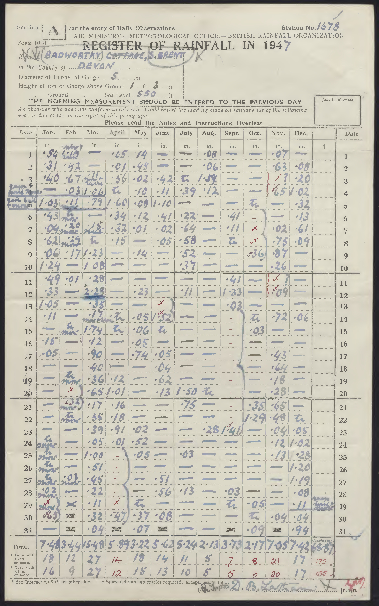

AI Data Rescue: Daily Precipitation¶
Summary¶
Can we use Artificial Intelligence (AI) to rapidly transcribe vital climate data from paper archives?
Yes we can. The Gemini 2.0 Flash Experimental multimodal large language model (latest model from Google at the time of writing) can extract monthly precipitation data from the UK Ten Year Rainfall Reports with near-perfect accuracy.
A sample page from the UK Ten Year Rainfall Reports, with the extracted data shown on the right. (Details)¶
Details¶
Datasets of historical weather observations are vital to our understanding of climate change and variability, and improving those datasets means transcribing millions of observations - converting paper records into a digital form. Doing such transcription manually is expensive and slow, and we have a backlog of millions of pages of potentially valuable records which have never been transcribed. We would dearly like a cheap, fast, software tool for extracting weather observations from (photographs of) archived paper documents. Can modern multimodal large language models be that tool?
I’m going to test using the Gemini 2.0 Flash Experimental multimodal large language model (latest model from Google at the time of writing) to transcribe daily precipitation data from the UK Daily Rainfall Reports .
Here is a sample Daily Rainfall page:
{kind=link}
I will extract information from this page using the Gemini API- going through the process in steps:
Gemini is extremely capable for this use case, and impressively easy to use. It’ll take a little bit more work to get good results for the daily rainfall cases with their variable missing data pattern. but it looks as if it’s ready to go as-is for simpler cases with no missing data. Ive tested this on a different example - the 10-year monthly totals for a station.
In this simpler case it works pretty-much perfectly.
There are various ways we could improve the process, particularly to cope better with missing data:
Small print¶
This document is distributed under the terms of the Open Government Licence. Source code included is distributed under the terms of the BSD licence.